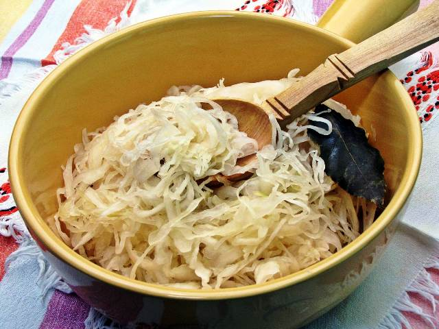
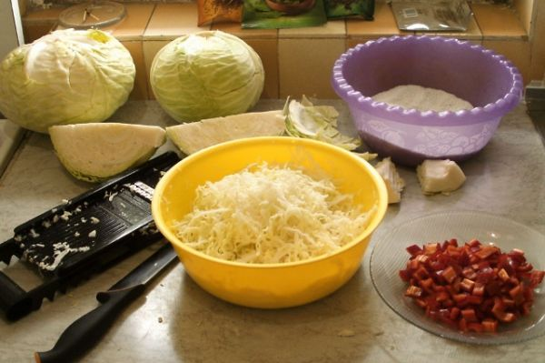
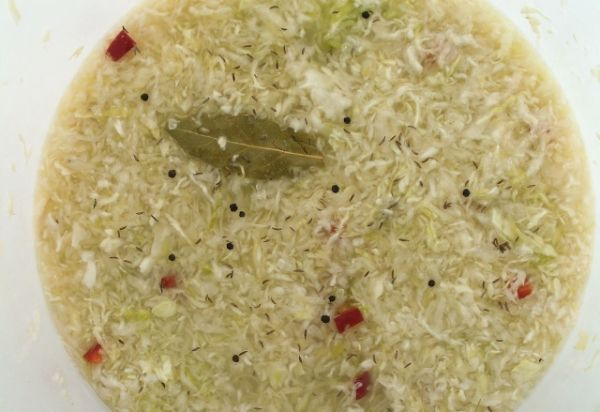
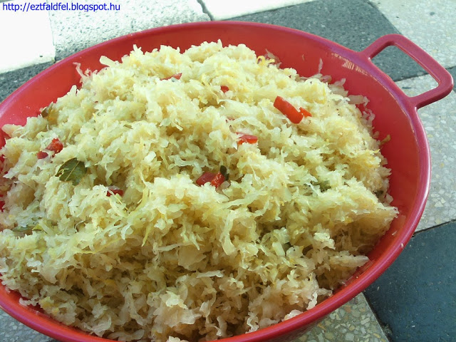

Elkészítése házilag
A savanyú káposzta az a savanyúság, amelyből minden télen rengeteget kellene fogyasztanunk. Tápanyagokban gazdag, sokféle vitamin és ásványi anyag-tartalma nagymértékben hozzájárul szervezetünk egészséges működéséhez. Fahordóban, műanyag edényben, vagy kerámia hordóban készíthetjük. Hagyományosan fahordóba teszik, és gumicsizmával tapossák, hogy a káposzta megtörjön, és levet engedjen.
A boltban kapható zacskós savanyú káposzták nem igaziak. Gyorssított eljárással savanyítják őket, amely nem tejsavas erjedéssel történik, hanem ecet, vagy citromsav és édesítőszerek hozzáadásával, amit utólag tartósítószerekkel kezelnek, hogy hosszú ideig legyenek eltarthatóak. Ahhoz pedig hogy mindeközben a káposzta roppanós maradjon, borként használnak. Ennek köszönhetően a bolti káposztákban nem sok élő dolog van, valamint C-vitamin tartalma is sokkal gyorsabban csökken, mint a hagyományos módon, természetes fermentációval készült savanyú káposztáké. Természetesen ennek köszönhetően a szervezetünkre gyakorolt hatása sem olyan áldásos, mint hagyományos társáé. Sajnos már a piacokon kapható káposzták igen nagy százaléka is hasonló eljárással készül, így igen nehéz – bár nem lehetetlen – megbízható forrást találni.
Hozzávalók egy 30 literes hordónyi savanyú káposztához25 kg fejes káposzta (nettó súly, tisztítás után)
1 kg durva konyhasó (nem jódozott!)
3 g babérlevél
7 g egész feketebors
7 g egész köménymag
2 db képia paprika
1 db nyári alma
Savanyú káposzta elkészítése
A káposzták külső piszkos, sérült leveleit távolítsuk el, majd a torzsa koszos, sérült részét is vágjuk le. Van, aki a torzsát teljesen kivágja, mi nem tettük, mert elég zsenge volt, és abban elég sok a cukor, ami segít az erjedésben. Mivel közepes fej káposztákat (1.6 – 3 kg) sikerült beszerezni, így nekünk 28 kg káposztából 3 kg hulladék lett, és így lett meg a 25 kg nettó súlyú alapanyag. Ezt kellett volna káposztagyalun legyalulni, de sajnos nekünk az nem volt.
Szóval, kezdjük el. Szedjünk le egy-egy nagyobb fej káposztáról kétszer 5-6 egész szép levelet leszedni, mert ezzel ki kell majd bélelni a hordó alját, és ezzel fogjuk lezárni a tetejét is. Tegyük tehát a hordó aljára az egyik adag 5-6 levelet, majd hintsük meg sóval. Gyaluljunk le egy (kisebb fejek esetén akár kettőt is) fej káposztát, majd szórjuk a hordóba. Erre megint jöhet egy kis marék só. Tegyünk rá 2-3 babérlevelet, hintsük meg lazán egész köménnyel, fekete borssal, esetleg megszórhatjuk még apróra vágott kápia paprika kockákkal is. A fűszerezés tekintetében az egyedi ízlésé a főszerep. Van aki más fűszereket is rak bele (kapor, csombor, stb.), van aki semmilyet, csak borsot. Ez teljesen egyedileg választható. Mi így szeretjük. Ezt követően jöhet ismét egy-két fej gyalult káposzta, majd a só és a fűszerek. Ezt a rétegzést mindaddig folytassuk, míg el nem fogy a káposzta.
Nagyon fontos, hogy minden réteg káposztát (az elsőt is) alaposan döngöljük le. Régen a nagy fa hordókban ezt gumicsizmában taposták, kisebb hordókban pedig döngölőfával adtak a feelingnek. A mi 30 literes hordónkhoz sem méretben illő gumicsizma, sem pedig döngölőfa nem volt, így minden sort az ökölbe szorított kezemmel nyomkodtam le. Minden sort alaposan ki kell nyomkodni. A lényeg, hogy minél több káposzta sejtet tudjunk szétroncsolni, és ezzel arra ösztökélni, hogy kiadja levét. Az első sornál már az is jó eredmény, ha sikerül annyit kipréselni belőle, hogy épp ellepje a sort, míg ahogy közeledünk a végéhez, egyre több lesz a leve. Felhívnám azonban minden vállalkozó kedvű figyelmét arra, hogy ha ököllel áll neki, készüljön fel rá, hogy az öklét kieszi a sós lé.
Ha készen vagyunk, és az utolsó sort is kinyomkodtuk, akkor jöhet a nyári alma (már ha teszünk bele). Vágjuk be a tetjén kereszt alakba, majd nyomjuk bobjuk bele a hordóba (akár lejjebb is nyomhatjuk benne). Ezt követően jöhet a tetejére a maradék 4-5 egész levél úgy elosztva, hogy a lehető legjobban lefedje az egészet. Erre kell egy olyan kerek tál, tányér, stb., ami belefér a hordóba, és szintén a lehető legjobban lefedi az összes káposztát. Kerüljük a fémeket! Erre kell valami nehezék. Régen ezek tisztára mosott kövek voltak, manapság elegendő lehet egy 4,25 literes tetővel lezárható, vízzel megöltött befőttes üveg is. Ezt helyezzük nehezéknek a hordóba, majd addig nyomjuk vele lassan lefelé a káposztát, míg egyrészt teljesen lé alatt lesz, másrészt a hordóra rá tudjuk tenni a csatos fedelet. Ez a megoldás azért jó, mert miközben a káposzta erjed, a fejlődő gáz felhajtóereje felfelé szeretné nyomni a káposztát, és ha a súlyt nem választottuk meg gondosan, akkor bizony fel is nyomná, és megpimpósodhatna az egész. Így azonban ez nem történhet meg, hiszen a hordó fedele biztosan nyomja lefelé az üveget…
Induljon az erjedés
Nagyjából 20-24 fokos helyiségbe kell tenni a hordót, ahol elvileg két-három nap után megindul az erjedés.
tovább >>Erjedés után
Amikor az erjedés megszűnt, a hab elkezd letisztulni a tetejéről (kb. 5-6 hét). Ha ez megtörtént, tegyük át 0-5 fokos helyiségbe, és lezárt fedővel tároljuk. Minél kevesebbet nyitogatjuk, annál tovább tartható el.
tovább >>Tárolás

Ha nincs olyan helyisége a házban, ahol folyamatosan 8 fok alatt lehetne tartani az elkészült káposztát, akkor fagyasszuk le, ugyanis az erjedés nem áll le.
tovább >>